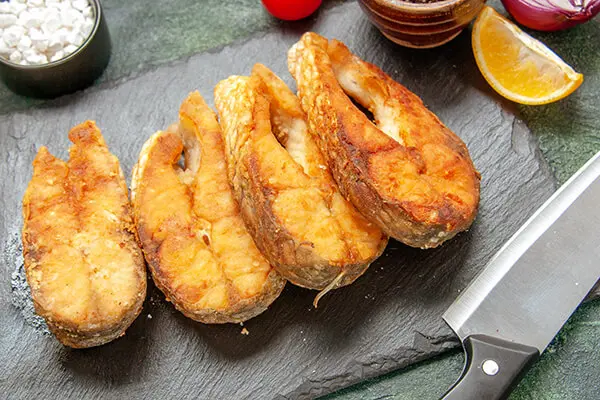

Peixe-serra

•
O peixe serra, também conhecido como espadarte ou peixe agulha, é um peixe de água salgada comum em regiões tropicais e subtropicais, incluindo a costa brasileira.
Este prato destaca o sabor único e a textura suculenta do peixe serra, preparado de forma simples e saudável através do método de grelhado.
Informação Nutricional
O peixe serra é uma excelente fonte de proteínas de alta qualidade e ácidos graxos ômega-3, que são benéficos para a saúde do coração e do cérebro.
O peixe grelhado é uma opção mais saudável em comparação com métodos de preparo que envolvem fritura ou empanamento.
R$50,00 | Prato feito ou Porção
« Voltar ao menu